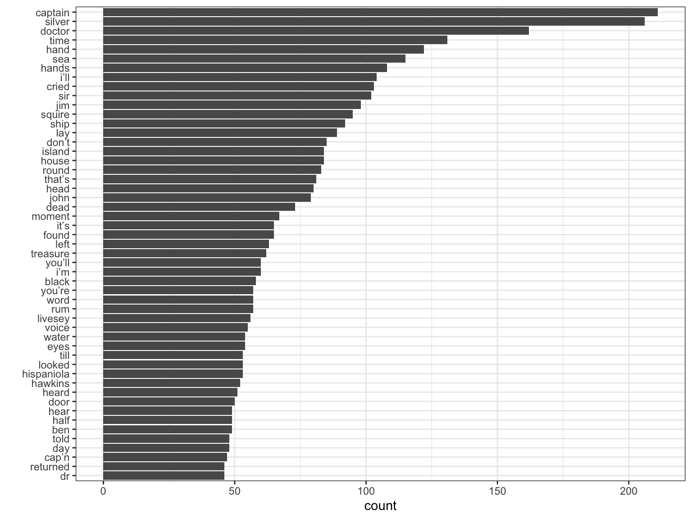

Strings are wrapped in ' or " quotes:
string1 <- "This is a string"
string2 <- 'If I want to include a "quote" inside
a string, I use single quotes'You can use \ to “escape” single or double quotes inside a string:
\n newline\r carriage return\t tab\b backspace\a alert (bell)\f form feed\v vertical tab\\ backslash \## [1] 12## [1] "Text as Data"## [1] "App" "Ban" "Pea"## [1] "ple" "ana" "ear"## [1] "A" "B"## [1] "a" "b"stringr has 43 functions to manipulate strings. If you need more, then use stringi, which has 232 functions. The main difference between the functions in both packages is the prefix: str_ vs. stri_.
Regular Expressions (regex) are a language or syntax to search in texts. Regex are used by most search engines in one form or another and are part of almost any programming language. In R, many string functions in base R as well as in stringr package use regular expressions, even Rstudio’s search and replace allows regular expression.
Regular expressions typically specify characters to seek out, possibly with information about repeats and location within the string. This is accomplished with the help of meta characters that have specific meaning:
$ * + . ? [ ] ^ { } | ( ) \.To identify match to a pattern
grep(..., value = FALSE), grepl(), stringr::str_detect()To extract match to a pattern
grep(..., value = TRUE), stringr::str_extract(), stringr::str_extract_all()To locate pattern within a string
regexpr(), gregexpr(), stringr::str_locate(), stringr::str_locate_all()To replace a pattern
sub(), gsub(), stringr::str_replace(), stringr::str_replace_all()To split a string using a pattern
strsplit(), stringr::str_split()The simplest patterns match exact strings:
. matches any character (except a newline):
^ matches the start of the string.
$ matches the end of the string.
\b matches the empty string at either edge of a word.
\B matches the empty string provided it is not at an edge of a word.
Quantifiers specify the number of repetitions of the pattern.
*: matches at least 0 times.+: matches at least 1 times.?: matches at most 1 times.{n}: matches exactly n times.{n,}: matches at least n times.{n,m}: matches between n and m times.## [1] "ab" "acb" "accb" "acccb" "accccb"## [1] "acb" "accb" "acccb" "accccb"## [1] "ab" "acb"## [1] "accb"## [1] "accb" "acccb" "accccb"## [1] "accb" "acccb"\: suppress the special meaning of meta characters in regular expression, i.e. $ * + . ? [ ] ^ { } | ( ) \, similar to its usage in escape sequences. Since \ itself needs to be escaped in R, we need to escape these meta characters with double backslash like \\$.[...]: a character list, matches any one of the characters inside the square brackets. We can also use - inside the brackets to specify a range of characters.[^...]: an inverted character list, similar to [...], but matches any characters except those inside the square brackets.|: an “or” operator, matches patterns on either side of the |.(...): grouping in regular expressions which allows to retrieve the bits that matched various parts of your regular expression. Each group can than be refer using \\N, with N being the No. of (...) used. This is called backreference.## [1] "abc" "abd" "abe"## [1] "abd" "abe" "ab 12"## [1] "ab" "abc" "abd" "abe" "ab 12"## [1] "^ab"## [1] "abc" "abd"## [1] "^ab" "ab" "abc" "abd" "abe" "ab 34"Character classes allow to specify classes such as numbers, letters, etc. There are two flavors of character classes, one uses [: and :] around a predefined name and the other uses \ and a special character:
[:digit:] or \d: digits, 0 1 2 3 4 5 6 7 8 9, equivalent to [0-9].\D: non-digits, equivalent to [^0-9].[:lower:]: lower-case letters, equivalent to [a-z].[:upper:]: upper-case letters, equivalent to [A-Z].[:alpha:]: alphabetic characters, equivalent to [[:lower:][:upper:]] or [A-z].[:alnum:]: alphanumeric characters, equivalent to [[:alpha:][:digit:]] or [A-z0-9].\w: word characters, equivalent to [[:alnum:]_] or [A-z0-9_].\W: not word, equivalent to [^A-z0-9_].[:xdigit:]: hexadecimal digits (base 16), 0 1 2 3 4 5 6 7 8 9 A B C D E F a b c d e f, equivalent to [0-9A-Fa-f].[:blank:]: blank characters, i.e. space and tab.[:space:]: space characters: tab, newline, vertical tab, form feed, carriage return, space.\s: space, \S: not space.[:punct:]: punctuation characters, ! " # $ % & ’ ( ) - + , - . / : ; < = > ? @ [ ] ^ _ ` { | } ~.There are different syntax standards for regular expressions, and R offers two: POSIX extended regular expressions (default) and Perl-like regular expressions.
You can easily switch between by specifying perl = FALSE/TRUE in base R functions, such as grep() and sub(). For functions in the stringr package, wrap the pattern with perl().
By default, pattern matching is case sensitive in R, but you can turn it off with ignore.case = TRUE (base R functions). In stringr, you need to pass the ignore.case = TRUE inside a modifier function like str_replace(string, regex(pattern, ignore.case=TRUE)). Alternatively, you can use tolower() and toupper() functions to convert everything to lower or upper case.
The term globbing refers to pattern matching based on wildcard characters. A wildcard character can be used to substitute for any other character or characters in a string. Globbing is commonly used for matching file names or paths, and has a much simpler syntax. Below is a list of globbing syntax and their comparisons to regular expression:
*: matches any number of unknown characters, same as .* in regular expression.?: matches one unknown character, same as . in regular expression.To determine if a character vector matches a pattern, use str_detect(). It returns a logical vector the same length as the input:
## [1] TRUE FALSE TRUE## [1] 58## [1] 0.2765306A variation on str_detect() is str_count(): rather than a simple yes or no, it tells you how many matches there are in a string:
## [1] 1 3 1## [1] 1.991837str_replace()andstr_replace_all()` allow you to replace matches with new strings. The simplest use is to replace a pattern with a fixed string:
## [1] "-pple" "p-ar" "b-nana"## [1] "-ppl-" "p--r" "b-n-n-"With str_replace_all() you can perform multiple replacements by supplying a named vector:
x <- c("1 house", "2 cars", "3 people")
str_replace_all(x, c("1" = "one", "2" = "two", "3" = "three"))## [1] "one house" "two cars" "three people"Use str_split() to split a string up into pieces.
## [[1]]
## [1] "a" "b" "c" "d"Regular expression in R official document.
Perl-like regular expression: regular expression in perl manual.
qdapRegex package: a collection of handy regular expression tools
On these websites, you can simply paste your test data and write regular expression, and matches will be highlighted.
Test your skills solving regexp crosswords at https://regexcrossword.com/challenges/beginner
Given the corpus of common words in stringr::words, create regular expressions that find all words that:
Start with “y”.
End with “x”
Start with a vowel.
That only contain consonants.
End with ed, but not with eed.
Start with three consonants.
Have three or more vowels in a row.
Have two or more vowel-consonant pairs in a row.
Thanks for your attention!